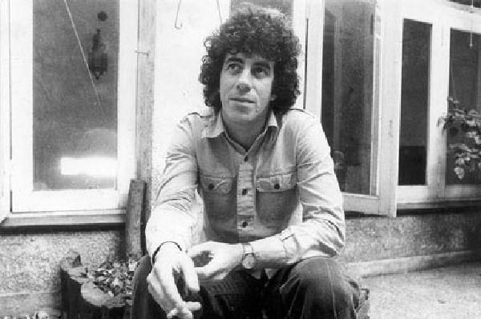

| Nombre completo | Fecha de nacimiento | Lugar de nacimiento | Fecha de fallecimiento | Instrumentos | Perfil | |
|---|---|---|---|---|---|---|
| Oscar Moro | 24 de enero de 1948 | Rosario, Santa Fe, Argentina. | 11 de julio de 2006 | Batería | Músico de rock argentino. Parte de varias de las bandas de rock más importantes de la historia del país, como Los Gatos, Serú Girán y Riff, Moro fue un baterista versátil, que abordó numerosos géneros y estilos. Se alejó de los escenarios en los años 1990, a causa de una frágil salud, pero dejó una impronta decisiva en el rock argentino. |  |